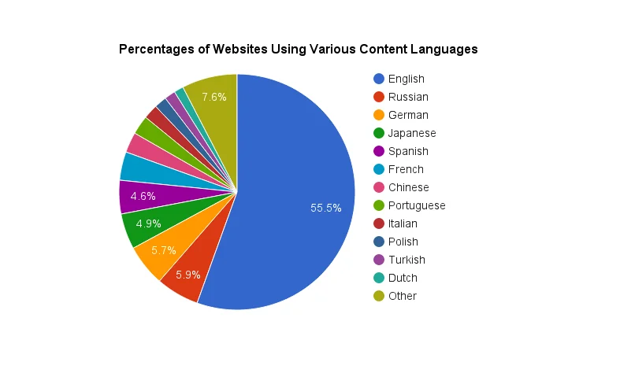

The internet was built to connect the world.
A place where anyone, anywhere, can access information, share ideas, and build communities. While its success is undoubted, we believe the World Wide Web can be even more worldly.

Did you know that...
- About 50% of websites are in English, making a vast amount of information inaccessible to those who don't speak the language.
- Unique content exists within each language sector, from scientific research in Japanese to cultural discussions in Arabic, or culinary content from Italy.
- This fragmentation hinders cross-cultural understanding, limits access to knowledge, and creates barriers to global collaboration.
Babel Language Surfer is a multi-faceted translation-based browser that aims to unite the global internet community by overcoming existing language barriers. With the help of artificial intelligence and an integrated user interface, Babel Language Surfer goes beyond your ordinary translation tool. It offers many unique features that allow users to understand nuances lost with conventional translations.
Key Features:
- Write and Surf In Your Native Language: Browsing the internet in a foreign language will be as easy as surfing in your native language. Your text-input and your web-results will be translated without you even knowing!
- Translation Parameters: Easily set parameters and adjust the type of translation you wish to receive. It could be as direct as possible, or simplified and with extra-details that help readers understand cultural contexts (these could be in text, or just in parenthesis.) Users could easily toggle between different translations to further understand nuances.
- Cultural Context Window: Gain a deeper understanding of the cultural nuances behind text or images by selecting and using our Cultural Context feature. Here, you’ll receive an in-depth explanation of the cultural context.
- Region-Unlocking Capabilities: Access content from anywhere globally, regardless of geographical restrictions by integrating VPNs (where permitted.)
- Seamless Integration: Enjoy a smooth and intuitive browsing experience with no need for clunky extensions or copy-pasting.
- Language Learning: Utilize our language learning mode to get the most out of surfing the web.
Translate As You Type
While our full-fledged browser is under construction, you can experience the power of Babel Language Surfer today with our Translate As You Type browser extension for chrome based browsers.
This browser extension is designed to streamline the translation of text as you type, without the need to copy-paste between tools. With Control + T, you can translate your text directly within any input field, enabling a more fluid and immersive experience when navigating foreign-language websites.
Key Features:
- Instant Input Translation (Control + T): Translate text in real-time within any input field.
- Integration with Full-Page Translators: Works seamlessly with existing tools like Google Translate.
Use Cases:
- Translate your searches to view results from other language sectors.
- Chat with foreign-language-speaking communities fluidly.
- Comment, post, or interact with foreign-language forums or social media content.
- Translate any document you are making "As-You-Type"
Our Translation API
Currently we have setup a server that hosts various MarianMT language translation machine learning models. While this service isn't as content rich as others such as: google translate, we want to explore the open source options available and be able to fine-tune the operations for the benefit of our users and to ensure success for the future of our endeavors.
Target Language Codes
en- Any to Englishfr- English to Frenches- English to Spanishit- English to Italianzh- English to Chinese
Try with Curl
curl -X POST 'https://api.langsurfer.com/translate' \
-H 'Content-Type: application/json' \
-d '{
"text": "Hello",
"target_language": "fr"
}'